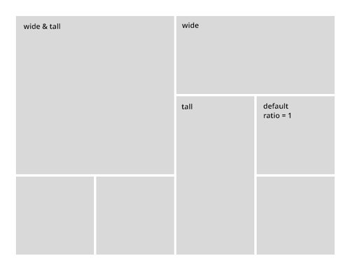

A how-to guide and helpful informations
about options and features of the template.
You bought an HTML / CSS template, so you need some basic knowledge for those 2 languages.
The best way is to play around with the different elements, but you'll find some helpfull tips and explanations how this template is build up and works.
Please compare all the explanation from this documentation with the original files to have a better understanding.
Please read and search this documentation file before seeking support. If you have any questions that are beyond the scope of this document you can still contact me by using the contact form on the support page of the item page at themeforest.
Do not use the comment section on the themeforest item page.
This will slow down the support process.
Sudo follows a simple and basic coding structure.
<!doctype html> <html class="no-js" lang="en-US"> <head> <!-- Including of Stylesheets, Fonts, Meta Tags & Title --> ... </head> <body> <!-- Main content wrapper --> <div id="page-content"> <!-- Header --> <header> ... </header> <!-- Hero Section --> <section id="hero"> ... </section> <!-- Page Body --> <section id="page-body"> ... </section> <!-- Footer --> <footer> ... </footer> </div> <!-- Including of Scripts (Javascript) --> ... </body> </html>
This is the default html structure you need to respect in all your pages. You're of course not forced to use all of the section. If you don't want a footer or hero for example, just delete this section (example: in the 404 page only header and hero is used). But if you do so, please use the structure like above with the right id's.
By default the page use a fullwidth / wide layout. Adding the class .page-boxed to the body will turn your website into a boxed layout.
<body class="page-boxed">
In this case you can choose any custom background for your body. By default it is a light grey to differentiate from the white main content.
The #page-body has a top padding to create space between the hero section. You can easily disable this padding, by adding the class .notoppadding to it.
<div id="page-body" class="notoppadding">
See the about-creative.html for example. The padding has been disabled because the page-body is starting with a split section which should stick to the hero section and have no space between.
Sometimes you will see some inline css for some html elements.
<div class="column one-half" style="background:url(image.jpg) center center;background-size:cover;">
In general, inline css is not the best way to go, and you should try to skip it if possible. (use classes and add to custom css)
But I decided to use it for some elements because it's for elements which just have a minor change (usually background or color) which would be much more complicated for your understanding to add a custom classes to each element which need these changes.
These 4 css files must be included in all of your html files
<!-- CSS -->
<link rel="stylesheet" id="default-style-css" href="files/css/style.css" type="text/css" media="all" />
<link rel="stylesheet" id="fontawesome-style-css" href="files/css/font-awesome.min.css" type="text/css" media="all" />
<link rel="stylesheet" id="ionic-icons-style-css" href="files/css/ionicons.css" type="text/css" media="all" />
...
<link rel="stylesheet" id="mqueries-style-css" href="files/css/mqueries.css" type="text/css" media="all" />
All other css are only needed if you use the related script. (isotope, owlcarousel, ...)
These are general classes, which you will find frequently in almost all html files, and whhich you can use for in any page or part of your site.
.wrapper it wrapps the element to a the main content width (1200px).wrapper-small same use than .wrapper but with smaller size (840px).left-float use this classname for any element you want to float to the left.right-float use this classname for any element you want to float to the right.clearfix for all elements which contains any floating element.clear add a clear element after the last floating element (use this if the parent container doesn't have .clearfix).align-center use this class if you want to center align the text for a whole section or just an element.align-right use this class if you want to right align the text for a whole section or just an element.text-light this class is needed if you use a darker background for a section (for example a dark parallax section).colored use this class for text elements you want to be coloredIf you want to customize some parts of the css, it's recommended to use a custom css file custom.css where you put all your customizations. This will make it much more easier if you need to update the template.
The custom.css already includes all colors & font rules. So if you want to change the main color, just replace the colore code with yours.
All fonts (except icon fonts) which are used by this template are comming from the Google font library.
<!-- FONTS --> <link href="http://fonts.googleapis.com/css?family=Montserrat:400,700" rel="stylesheet" type="text/css"> <link href="http://fonts.googleapis.com/css?family=Lato:300,400,700" rel="stylesheet" type="text/css"> <link href="http://fonts.googleapis.com/css?family=Lora:400italic,700italic" rel="stylesheet" type="text/css">
The template uses 3 different fonts:
You can of course change/use other fonts. The custom.css file has a full list with all elements using which font.
See the custom-restaurant.css for example. The Lora font has been exchanged with the Italianno font and the sizes for these elements has been changed.
By default the headings (h1,h2,h3,h4,h5,h6) uses the main heading font "Montserrat". There are some predefined classes for "manipulating" the default headings.
subtitle-1 will take the subtitle-1 font which is Latosubtitle-2 will take the subtitle-2 font which is Lorauppercase will transform the letters to uppercases and add some more letter spacingcolored color of the font will have the default main colorThe subtitles classes will also decrease the opacity. Combine the different options as you need.
<h2 class="subtitle-1">Hello World</h2> <h2 class="subtitle-2">Hello World</h2> <h2 class="uppercase">Hello World</h2> <h2 class="colored">Hello World</h2> <h2 class="subtitle-1 uppercase colored">Hello World</h2>
The template also includes icon fonts which are mandatory for all your pages. So make sure to have these icon fonts inlcuded in all of your html files.
<!-- CSS --> ... <link rel="stylesheet" id="fontawesome-style-css" href="files/css/font-awesome.min.css" type="text/css" media="all"/> <link rel="stylesheet" id="ionic-icons-style-css" href="files/css/ionicons.css" type="text/css" media="all"/> ...
All js scripts are inlcuded at the bottom of the html file just before the body closes. Make sure to include these 4 js files in all of your html files
<!-- SCRIPTS --> <script src="files/js/jquery-2.1.4.min.js"></script> <script type="text/javascript" src="files/js/jquery.easing.1.3.js"></script> <script type="text/javascript" src="files/js/jquery.visible.min.js"></script> ... <script type="text/javascript" src="files/js/script.js"></script> <!-- SCRIPTS -->
All other js are only needed if you use the related script. (isotope, owlcarousel, ...)
Every page has a preloader effect which displays a loading animation while the content it is loading.
Here's the markup you will find in all html files.
The code is and should be placed directly after the body opening.
<body>
<!-- PAGELOADER -->
<div id="page-loader">
<div class="page-loader-inner">
<span class="loader-figure"></span>
<h6 class="loader-label">Loading</h6>
<img class="loader-logo" src="files/uploads/logo-loader.png" alt="Loader Logo">
</div>
</div>
<!-- PAGELOADER -->
This is of course not an obligation to use the pageloader.
If you don't want a preloader effect just delete the whole preloader markup from your html file.
See here the default header structure
<!-- HEADER --> <header id="header"> <!-- TOP BAR --> <div id="top-bar" class="clearfix"> <div class="top-bar-site left-float show-on-mobile"> CONTENT </div> <div class="top-bar-site right-float clearfix"> CONTENT </div> </div> <!-- END #top-bar --> <div class="clear"></div> <div class="header-inner clearfix"> <!-- LOGO --> <div id="logo" class="left-float"> <a href="index.html"> <img id="scroll-logo" src="files/uploads/logo-scroll.png" alt="Logo on Scroll"> <img id="dark-logo" src="files/uploads/logo-dark.png" alt="Logo Dark"> <img id="light-logo" src="files/uploads/logo-light.png" alt="Logo Light"> </a> </div> <!-- MAIN NAVIGATION --> <div class="menu right-float clearfix"> ... </div> </div> </header> <!-- HEADER -->
The #scroll-logo is an optional feature. Please see Logo for more information.
As the code shows above, you can optinally add a top bar to your header. This bar is meant to only contain very small infos/content like your adress, or social links.
Add the class show-on-mobile to the element you want to show in responsive mode on mobile devices. You can only choose one of your elements.See the medical demo for an example
Important When using a top-bar, make sure to also add the class has-top-bar to the header element
<header id="header" class="has-top-bar">
You can choose between multiple Header appearence options while creating your Pages. Simply add the css class to the Header Element and your header will apply the given rule.
default
By default the header has a white background with dark text.
<header id="header"> ... </header>
.header-dark
Header with a dark background and light text
<header id="header" class="header-dark"> ... </header>
.header-transparent
Header with a transparent background. Optionally add the class .transparent-light for light text in transparent mode.
<header id="header" class="header-transparent transparent-light"> ... </header>
.header-bordered
This will add borders between the different header sections (Logo,Menu & Menu-Misc).
Borders won't show on mobile devices in responsive mode.
<header id="header" class="header-bordered"> ... </header>
.sub-dark
By adding this class the submenus & mega menus will be on dark background. The default appearance of the submenus are white background.
<header id="header" class="sub-dark"> ... </header>
.not-sticky
If adding this class the header won't stick to the top when you scroll.
<header id="header" class="not-sticky"> ... </header>
All these options can of course be combined. For example if you want a transparent header with borders and a dark submenu.
<header id="header" class="header-bordered header-transparent sub-dark not-sticky"> ... </header>
There are 2 advanced styling option for the header which will change the headers position and styling.
.header-style-floating
With this class your header will have a floating appearence. You combine this option with the above optios like .not-sticky, header-transparent, etc.
On mobile devices it will switch to a default styling.
<header id="header" class="header-style-floating">
.header-style-vertical
Your header will have a vertical styling positioned on the left of your page.
Important Do not combine this style with other options except the header-dark option.
On mobile devices it will switch to a default styling.
<header id="header" class="header-style-vertical header-dark">
You'll find the logo container in the header element #header.
Please respect this structure and the id's of the different logos.
...
<div id="logo" class="left-float">
<a href="index.html">
<img id="scroll-logo" src="files/uploads/logo-scroll.png" alt="Logo on Scroll">
<img id="dark-logo" src="files/uploads/logo-dark.png" alt="Logo Dark">
<img id="light-logo" src="files/uploads/logo-light.png" alt="Logo Light">
</a>
</div>
...
Important You MUST provide your logo in dark & light appearance. These 2 logo files (dark & light) need to have the same sizes. This is very important. Please have also a look at "Adapt / Change the CSS" below, if your logo have a different height than the original Sudo logo.
The #scroll-logo is an optional unique feature of the template. This logo will only be showed on scroll (when the header shrinks). If you want to make use of it just place it in front of the dark & light logo just like the example above. This Logo can have a different size but should have a minimum height of 30px.
Note Depending on your logo height you need to adapt the style.css. Open the style.css and scroll to the bottom. Adapt the values depending on your logo height.
The original Sudo logo used has a height of 30px.
/* your logo height */
header #logo { height: 30px; }
nav#main-nav > ul > li > a { height: 30px; line-height: 30px; }
#header-search a#show-search,
#header-cart a#show-cart,
#header-language a#show-language { height: 30px; line-height: 30px; }
/* Height of the header on pageload - Logo height + padding of #logo a (30+2x30)*/
nav#main-nav .mega-menu-content:before { height: 90px; }
header:not(.header-transparent) + #hero { margin-top: 90px; }
header:not(.header-transparent) + #page-body { margin-top: 90px; }
header.header-transparent + #hero #page-title { margin-top: 90px; }
header.header-transparent + #page-body .fullwidth-section:first-child::before { height: 90px; }
#hero.hero-full #page-title.title-top,
#hero.hero-big #page-title.title-top,
#hero.hero-half #page-title.title-top { margin-top: 90px !important; }
So if you have a logo height of 50px for example, you would need to replace 30px by 50px and 90px by 110px.
To make your logo (or any kind of image) ready for retina devices you just need to have 2 image files for each logo (image).
Now you just need to tell the html that it should include the doubled size for retina devices by using the srcset attribute.
<img src="logo.png" srcset="logo.png 1x, logo@2x.png 2x">
Please have also a look at the world wide web for more information about the srcset attribute.
The hero section is the first content of your page after the header in the html markup. It usually contains the page title of the page, but can also hold a slider or some other content
... </header> <section id="hero"> <div class="page-title"> ... </div> <a href="#" id="scroll-down"></a> </section> <section id="page-body"> ...
Optionally add a scroll-down button to the hero section
Please have a look at the different features Revolution Slider, Video Background, Parallax Background to know how to use them.
The page-title section can contain any type of content but usually there is one or multiple "headings" and some other small elements like buttons or separators included
<section id="hero" class="hero-auto"> <div id="page-title" class="wrapper align-center"> <h1><strong>Main Title</strong></h1> <hr class="zigzag small"> <h5 class="subtitle-2">A small subtitle</h5> </div> </section>
.hero-auto
The height of the hero section is set on aut and depends on the content.
NoteIf you use a slider you MUST use hero-auto.
<section id="hero" class="hero-auto">
.hero-big
The height of the hero will take 75% of your viewport/window height.
If the content needs more height, it will adapt.
<section id="hero" class="hero-big">
.hero-full
It takes the full height of your viewport/window height.
If the content needs more height, it will adapt.
<section id="hero" class="hero-full">
.overlay-body
By adding this class the page-body will overlay ther header by 100px.
Example in the index-blog-magazine.html
<section id="hero" class="hero-full overlay-body">
If you use hero-big or hero-full you can position the pagetitle to the top or bottom. By default it will be centered positioned.
Use align-center or align-rught to give the contente a centered/right alignment
<section id="hero" class="hero-full">
<div id="page-title" class="wrapper align-center title-top">
...
<section id="hero" class="hero-full">
<div id="page-title" class="wrapper align-center title-bottom">
...
The great Revolution Slider is used for the hero slider. You can find the Revolution Slider related Documentation (online) here.
If you're new to the revolution slider you should definately have a look at the docs.
There are some slider options which are related to this template.
Find the script initialiser/caller in the script.js. You can of course change the different options to your needs.
/*----------------------------------------------
R E V O L U T I O N S L I D E R
------------------------------------------------*/
if(jQuery().revolution) {
jQuery("#hero .revolution-slider").revolution({
sliderType:"standard",
sliderLayout:"fullscreen",
fullScreenOffsetContainer:"#pseudo-header",
delay:9000,
disableProgressBar:'on',
navigation: {
arrows:{
enable:true,
style:"sudo-nav",
left:{ h_offset: 0 },
right:{ h_offset: 0 }
},
bullets:{
enable:false,
style:"sudo-bullets",
h_align:"center",
v_align:"bottom",
h_offset:0,
v_offset:20,
space:8,
},
touch:{
touchenabled:"on",
swipe_treshold : 75,
swipe_min_touches : 1,
drag_block_vertical:false,
swipe_direction:"horizontal"
}
},
responsiveLevels:[2048,1024,778,480],
gridwidth:[1024,778,480,400],
gridheight:[700,550,550,450],
lazyType: 'smart'
});
}
For the arrows and bullets appearance, use the style sudo-nav / sudo-bullets to use the sudo styling.
If you have a transparent header and the headers color (logo,menu,...) should be dynamic, which means on different slides (depending on its background) the header should be light or dark, add the related class to the slide. As done in the index.html
<div id="revolutionslider1" class="revolution-slider" data-version="5.0">
<ul>
<li class="text-light" data-transition="fade" data-masterspeed="700">
...
</li>
<li class="text-dark" data-transition="fade" data-masterspeed="700">
...
</li>
...
If you want to use the title style from the template add the class sudo-caption to the layer/caption. Now it will have the exact styling as your headings (h1...h6) and you can optionally use the same options (subtitle-1,subtitle-2,uppercase).
Choose the fontsize with the data-fontsize option. See index.html
<div class="tp-caption sudo-caption subtitle-2" data-x="center" data-hoffset="0" data-y="center" data-voffset="['-170','-170','-150','-125']" data-fontsize="['24','24','20','18']" data-lineheight="['24','24','20','18']" data-width="none" data-height="none" data-whitespace="nowrap" data-transform_idle="o:0.7" data-transform_in="o:0;y:50px;s:1000;e:Power3.easeOut;" data-transform_out="o:0" data-start="400" data-responsive_offset="on"> We are Sudo </div>
The different portfolio layouts (except the carousel) uses the isotope script to display the Portfolio items. Please have a look at the isotope documentation.
This is the general markup for the portfolio items.
<div class="isotope-item portfolio-item branding"> <!-- Portfolio media --> <div class="portfolio-media"> <a href="portfolio-single-gallery.html" class="thumb-overlay overlay-effect-1 text-light"> <img src="files/uploads/portfolio-thumb-modern-2.jpg" alt="SEO IMG NAME"> <div class="overlay-caption"> <h6 class="caption-sub portfolio-category subtitle-2">Category</h6> <hr class="zigzag"> <h4 class="caption-name portfolio-name uppercase">Project Name</h4> </div> </a> </div> <!-- Portfolio Description --> <div class="portfolio-desc"> <a href="portfolio-single.html"> <h6 class="portfolio-category subtitle-2">Category</h6> <h5 class="portfolio-name" ><strong>Project Name</strong></h5> </a> </div> </div>
.branding This is the name for the filter attribute. Thanks to this the script knows which item should be hidden or displayed when clicking on the filter.
.overlay-effect-1 See the Hover Effects possibilities.
Drop the Portfolio Description part if you use a style-modern layout. See also isotope documentation
The only difference between the fullwidth and boxed layout, is that on the boxed layout the whole grid or content is wrapped by the .wrapper element.
<section id="page-body"> <div class="wrapper"> <div id="portfolio-grid" class="isotope-grid portfolio-container style-column-3"> ... </div> </div> </div>
You can place the filter wherever you want. Thanks to the data-related-grid option the filter knows which grid it shall address to. Usually it is displayed right before the item.
Use this code
<ul id="portfolio-filter" class="filter" data-related-grid="portfolio-grid"> <li class="active" ><a href="#" data-filter="*">Show All</a></li> <li><a data-filter=".branding" href="#" title="Branding">Branding</a></li> <li><a data-filter=".web" href="#" title="Print">Web Design</a></li> <li><a data-filter=".photography" href="#" title="Print">Photography</a> </ul>
All filter anchors needs a data-filter attribute with the correct filter name (example: .branding).
Important It's important that the value of data-related-grid has the same name than the id of the grid.
.filter-dark
add this class to have a dark background for the filter.
<ul id="portfolio-filter" class="filter filter-dark" ... > ... </ul>
.filter-grey
for a light grey background
<ul id="portfolio-filter" class="filter filter-grey" ... > ... </ul>
You can also place the filter into the hero section. Put it just before the hero section ends.
If your hero has a dark background and you would like to have light text just add the .text-light class.
<section id="hero">
...
<ul id="portfolio-filter" class="filter text-light" ... >
...
</ul>
</section>
<!-- HERO -->
Choose between a column or modern layout.
Please have a look at the isotope documentation.
Like the portfolio, the different blog layouts (except the classic layout) uses the isotope script to display the Blog posts. Please have a look at the isotope documentation.
This is the general markup for the blog entries with the content displayed below the post image.
<div class="isotope-item blog-item">
<div class="blog-media">
<a href="blog-single-custom1.html" class="thumb-overlay">
<img src="files/uploads/blog-thumb-grid-1.jpg" alt="SEO IMG NAME">
<img src="files/uploads/blog-thumb-grid-1-hover.jpg" class="hover-pic" alt="SEO IMG NAME">
</a>
</div>
<div class="blog-desc align-center">
<div class="blog-headline">
<h6 class="post-category uppercase">Travel</h6>
<h5 class="post-name"><a href="#"><strong>Waterfalls of Iceland</strong></a></h5>
</div>
<p> intro text </p>
<ul class="blog-meta">
<li class="post-date">5 hours ago</li>
<li class="post-comments"><i class="fa fa-comments"></i> 3</li>
</ul>
</div>
</div>
This markup is used for the modern layout with the content overlaying the image.
<div class="isotope-item blog-item">
<div class="blog-media">
<a href="blog-single-custom1.html" class="thumb-overlay overlay-effect-3 text-light">
<img src="files/uploads/blog-thumb-modern-3.jpg" alt="SEO IMG NAME">
<img src="files/uploads/blog-thumb-modern-3-hover.jpg" class="hover-pic" alt="SEO IMG NAME">
<span class="overlay-caption caption-bottom">
<h6 class="post-category subtitle-2">Travel
<h4 class="post-name uppercase">Waterfalls of Iceland
</span>
</a>
</div>
</div>
The only difference between the fullwidth and boxed layout, is that on the boxed layout the whole grid or content is wrapped by the .wrapper element.
<section id="page-body"> <div class="wrapper"> <div id="blog-grid" class="isotope-grid blog-container style-modern-4 isotope-spaced" data-heightratio="1"> ... </div> </div> </div>
See here the markup for the classic blog layout which is always wrapper into a .wrapper-small
<div class="wrapper-small">
<div id="blog-grid" class="classic-blog blog-container">
<div class="blog-item">
<div class="blog-media">
<a href="blog-single-custom1.html" class="thumb-overlay">
<img src="files/uploads/blog-thumb-grid-1.jpg">
<img src="files/uploads/blog-thumb-grid-1-hover.jpg" class="hover-pic">
</a>
</div>
<div class="blog-desc">
<div class="blog-headline">
<h6 class="post-category uppercase">Travel
<h3 class="post-name"><a href="#"><strong>Waterfalls of Iceland</strong></a></h3>
</div>
<p> intro text </p>
<ul class="blog-meta">
<li class="post-date">5 hours ago</li>
<li class="post-comments"><i class="fa fa-comments"></i> 3</li>
<li class="post-author"><a href="#"><img src="image.jpg" ><span>by Jhon Florence</span></a></li>
</ul>
</div>
</div> <!-- END .blog-item -->
...
</div> <!-- END #blog-grid -->
</div> <!-- END .wrapper-small -->
The shop grid also uses the isotope script to display the items. Please refer to the isotope documentation
<div id="shop-grid" class="isotope-grid shop-container style-column-4 fitrows isotope-spaced">
<div class="isotope-item shop-item">
<div class="product-media">
<a href="shop-single-simple.html" class="thumb-overlay">
<img src="files/uploads/shop-thumb-1.jpg">
<img src="files/uploads/shop-thumb-1-hover.jpg" class="hover-pic">
</a>
<div class="add-to-cart-overlay">
<a href="shop-single-simple.html" class="add_to_cart_button">Add to cart</a>
</div>
</div>
<div class="product-desc align-center">
<h6 class="product-name uppercase">Dark Gradient Shirt</h6>
<div class="product-price">$ 53.99</div>
</div>
</div> <!-- END .shop-item -->
...
</div> <!-- END #shop-grid -->
It's recommended to use images with the same size in order to have a coherent appearance, but it's up to you of course.
This is a HTML template, which means that only the html,css and javascript are provided. By clicking on "Add to Cart" nothing will happen, because to make a shop system work it needs a system with database like php for example.
You can easily show your Instagram Photos by username or tag. Just use this marup and adapt the different data options.
<div class="instagram-widget instagram-spaced" data-type="user" data-user="envato" data-count="16"></div>
data-type Choose between 'user' and 'tag'
data-user Enter the username. This is only needed if your type is 'user'.
data-tag Enter the tag. This is only needed if your type is 'tag'.
data-count Number of images you want to show.
instagram-spaced optional if you want a spacing between the images.
Note Make sure to include the javascript spectragram.min.js in the html you want to include instagram
Important You should replace the Access toke & ClientId by yours in script.js at line 732-733. Please have a look on the web on how to get them. Here is one of them: Getting an instagram clientid and accesstoken
Write this code for showing your flickr images anywhere on your website.
How to get the id
<div class="flickr-widget flickr-spaced" data-id="37304598@N02" data-count="8"></div>
data-id Enter the id of the user.
data-count Number of images you want to show.
flickr-spaced optional if you want a spacing between the images.
Note Make sure to include the javascript jflickrfeed.min.js in the html you want to include flickr feed. Optionally you can also include the lightbox scripts.
Before you can use the dribbble widget you must register an app via dribbble to get a valid access token. Register a Dribbble Application
After you did this and get a Access Token, copy this token and paste in files/js/script.js at line +- 780
jQuery.jribbble.setToken('YOURACESSTOKEN');
Now you can easily add your dribble shots using this marup.
<div class="dribbble-widget dribbble-spaced" data-user="spabrice" data-count="12"></div>
data-user Enter the username.
data-count Number of images you want to show.
dribbble-spaced optional if you want a spacing between the images.
Note Make sure to include the javascript jribbble.min.js in the html you want to include dribbble feed.
This tempalte also include a one page feature you can easily include into your project. To do so, just add the class scroll-to to your menu items with the right anchor tag
<nav id="main-nav">
<ul>
<li class="current-menu-item"><a href="#hero" class="scroll-to">Home</a></li>
<li><a href="#section-about" class="scroll-to">About</a></li>
<li><a href="#section-portfolio" class="scroll-to">Portfolio</a></li>
<li><a href="#section-services" class="scroll-to">Services</a></li>
<li><a href="#section-contact" class="scroll-to">Contact</a></li>
</ul>
</nav>
The href attribute needs to have the id of the section you want to link at. See below
Now devide and wrap all your content into the different smart nav section with the related id
<div id="section-about" class="smart-nav-section"> <div class="wrapper"> ... </div> </div> <!-- END #section-about --> <div id="section-portfolio" class="smart-nav-section"> <div class="wrapper-small"> ... </div> </div> <!-- END #section-portfolio --> <div id="section-services" class="smart-nav-section"> <div class="fullwidth-section parallax-section text-light"> ... </div> </div> <!-- END #section-services --> ...
Please have also a detail look at the index-onepage.html and make sure to have included the smart-nav.js file.
A fullwidth-section is a fullwidth section which have some sort of background (color,image,video,etc.) to seperate some specific content from default content.
Important A fullwidth section CAN NOT be placed into a wrapper element in order to take the full width!
<div class="fullwidth-section"> <div class="fullwidth-content wrapper"> ... </div> </div>
By default the fullwidth-section (actually the fullwidth-content) has a top & a bottom padding and will adapt to the content height.
.notoppadding
Add this class if you don't want any top padding.
<div class="fullwidth-section" class="notoppadding">
.nobottompadding
Add this class if you don't want any bottom padding.
<div class="fullwidth-section" class="nobottompadding">
.fullheight
This class will scale up the whole section to the the viewport/window height. If the content need more height it will adapt of course.
<div class="fullwidth-section" class="fullheight">
The isotope script is used for all grid layouts (masonry,modern,classic) for the Portfolio, Blog, Shop and Gallery. All of them uses the isotope script to create the grid. You have several option to style your grid.
Make sure to inlcude the jquery.isotope.min.js AND jquery.imagesloaded.min.js script. This is important.
<div id="YOUR-GRID-ID" class="isotope-grid TYPE-container"> <div class="isotope-item TYPE-item"> <!-- ITEM CONTENT --> ... </div> <div class="isotope-item TYPE-item"> <!-- ITEM CONTENT --> ... </div> ... </div>
#YOUR-GRID-ID I really recommend to use any custom id for each grid. It is very important if you use a filter.
For example the portfolio, I used the id #portfolio-grid, for the shop I used #shop-grid, and so on.
.TYPE-container Change "TYPE" with the type of your content (portfolio,blog,shop or gallery)
For example the gallery, I used the class .gallery-container, for the blog I used .blog-container, and so on.
.TYPE-item Change "TYPE" with the type of your content (portfolio,blog,shop or gallery)
As the name it says, the different items will be displayed in a column layout. You can choose between 2,3,4 or 5 columns. Add the wanted class to the grid container element.
<div id="portfolio-grid" class="isotope-grid portfolio-container style-column-2"> Or <div id="portfolio-grid" class="isotope-grid portfolio-container style-column-3"> Or <div id="portfolio-grid" class="isotope-grid portfolio-container style-column-4"> Or <div id="portfolio-grid" class="isotope-grid portfolio-container style-column-5">
To create a masonry effect you just need to use different image sizes. By using images (or the overall content of each item) with different image heights you can achieve a masonry effect as done in the masonry html example files.
If you want to have an equal grid, just add the class fitrows to the grid container element. This will force the different rows to always be aligned horizontally.
<div id="portfolio-grid" class="isotope-grid portfolio-container style-column-4 fitrows">
The modern layout is another unique feature of the template. The grid will be devided into columns and by adding wide & tall to the different items you can decide which item should occopy more space or not.
Additionally you can add a ration value.
<div id="blog-grid" class="isotope-grid blog-container style-modern-4" data-heightratio="1"> <div class="isotope-item blog-item wide tall"> ... </div> <div class="isotope-item blog-item tall"> ... </div> <div class="isotope-item blog-item wide"> ... </div> ... </div>

You can choose between 3,4 and 5 columns for the modern layout mode. style-modern-3 style-modern-4 style-modern-5
In this layout mode your images will be upsized/downsized to fill in the whole item space.
This means if you use small images it will be upsized and loose quality.
Please have also a look at the example html files.
You can easily add spacings (for both layout modes) by adding the class isotope-spaced to the container.
<div id="portfolio-grid" class="isotope-grid portfolio-container style-modern isotope-spaced">
You can easily filter your different grids with some filter anchors. In the original demo pages, the filter option is only used for the portfolio items but you could also use it for the other types (blog,gallery,...).
To begin with add the filter class names to your isotope-items
<div id="portfolio-grid" class="isotope-grid portfolio-container"> <div class="isotope-item portfolio-item branding"> ... <div> <div class="isotope-item portfolio-item photography"> ... <div> ...
Now, place the filter list somewhere. Usually it is place just before the grid but you can place the filter wherever you want. Thanks to the data-related-grid option the filter knows which grid it shall address to.
Use this code
<ul id="portfolio-filter" class="filter" data-related-grid="portfolio-grid"> <li class="active" ><a href="#" data-filter="*">Show All</a></li> <li><a data-filter=".branding" href="#" title="Branding">Branding</a></li> <li><a data-filter=".web" href="#" title="Print">Web Design</a></li> <li><a data-filter=".photography" href="#" title="Print">Photography</a> </ul>
All filter anchors needs a data-filter attribute with the correct filter name you also added to the yout items (example: .branding).
Important It's important that the value of data-related-grid has the same name than the id of the grid/container element.
.filter-dark
add this class to have a dark background for the filter.
<ul id="portfolio-filter" class="filter filter-dark" ... > ... </ul>
.filter-grey
for a light grey background
<ul id="portfolio-filter" class="filter filter-grey" ... > ... </ul>
You can also place the filter into the hero section. Put it just before the hero section ends.
If your hero has a dark background and you would like to have light text just add the .text-light class.
<section id="hero">
...
<ul id="portfolio-filter" class="filter text-light" ... >
...
</ul>
</section>
<!-- HERO -->
To create a carousel, the owl script is used, so make sure to inlcude the appropriate javascript and css for all pages you want to enable the carousel.
<div id="YOUR-GRID-ID" class="owl-carousel TYPE-container"> <div class="owl-item TYPE-item"> <!-- ITEM CONTENT --> ... </div> <div class="owl-item TYPE-item"> <!-- ITEM CONTENT --> ... </div> ... </div>
#YOUR-GRID-ID Use a custom grid id if needed. This is optional.
.TYPE-container Change "TYPE" with the type of your content (portfolio,blog,shop or gallery)
For example the portfolio, I used the class .portfolio-container
.TYPE-item Change "TYPE" with the type of your content (portfolio,shop, ...)
You can easily add spacings by adding the class owl-spaced to the container. Additionally add the data-margin option to add your custom spacing value. I usually went for 30px to be in harmony with the rest of the layout.
<div id="portfolio-grid" class="owl-carousel portfolio-container owl-spaced" data-margin="30">
data-items
Choose the items you want to display on big screens.
Default = 4
<div class="owl-carousel ..." data-items="3">
...
</div>
data-nav
Enable/Disable the arrows with true or false.
Default = true
<div class="owl-carousel ..." data-nav="false">
...
</div>
data-dots
Enable/Disabled the bullets/dots with true or false.
Default = true
<div class="owl-carousel ..." data-dots="false">
...
</div>
data-loop
Enable/Disabled the looping with true or false.
Default = false
<div class="owl-carousel ..." data-loop="true">
...
</div>
data-autoplay
Enable/Disabled the autoplay with true or false.
Default = false
<div class="owl-carousel ..." data-autoplay="true">
...
</div>
nav-light
By default the navigation dots have a dark appearance. If your carousel is on a dark background you might change this with the nav-light class.
<div class="owl-carousel nav-light ..." >
...
</div>
All content sliders are done with the owl carousel script, so make sure t have this js and css file included in your html.
Markup for a default media (image,video) slider.
<div class="owl-slider nav-light" data-nav="true"> <div><img src="files/uploads/blog-single-3.jpg" alt="SEO Name"/></div> <div><img src="files/uploads/blog-single-4.jpg" alt="SEO Name"/></div> </div>
Markup for a content/text slider.
<div class="owl-slider content-slider">
<div> ... CONTENT ... </div>
<div> ... CONTENT ... </div>
</div>
You can use the same options as the carousel options.
The default grid gallery uses the isotope / masonry script. So please have a look above to see how it works (if you don't know yet). To enable the lightbox just wrap your img into a anchor tag with the lightcase rel attribute.
<div id="gallery-grid-2" class="isotope-grid gallery-container style-column-4 isotope-spaced clearfix">
<div class="isotope-item">
<a href="files/uploads/image-big.jpg" data-rel="lightcase:gallery1" class="thumb-overlay overlay-effect-1 text-light">
<img src="files/uploads/image.jpg" alt="SEO IMG NAME">
</a>
</div>
...
The lightbox option uses the lightbox script. Add the class data-rel="lightcase:CUSTOMGALLERYNAME" to the anchor tags you would like to open in a lightbox.
<a href="files/uploads/image-big.jpg" data-rel="lightcase:gallery1"> <img src="files/uploads/image.jpg" alt="SEO IMG NAME"> </a>
<a href="http://www.youtube.com/embed/6v2L2UGZJAM" data-rel="lightcase">Youtube Video</a> <a href="http://player.vimeo.com/video/110894499" data-rel="lightcase">Vimeo Video</a> <a href="files/uploads/coffee.mp4" data-rel="lightcase">Selfhosted Video</a>
If using youtube/vimeo videos, make sure to enter the url which is provided on the embedded iframe code on 'src'
Example Vimeo: http://player.vimeo.com/video/VIMEOID
Example Youtube: http://www.youtube.com/embed/YOUTUBEID
You can add a parallax image to every element but usually it's used for the Hero Section or an Fullwidth Section.
Add the class parallax-section" (and optionally 'text-light' if you use a dark background), and the data-parallax-image.
<div class="fullwidth-section text-light parallax-section" data-parallax-image="files/uploads/parallaxbg.jpg">
Make sure to inlcude the jquery.backgroundparallax.min.js AND tweenMax.js script. The tweenmax is not mandatory but will make it smoother especially for google chrome.
You have 5 possibilities to integrate videos to your pages. See also media-video.html
Just go to your video site (youtube, vimeo or others) and search for the embedding iframe code and just put it on your page where you want.
Example for a youtube video.
<iframe width="560" height="315" src="https://www.youtube.com/embed/9dgSa4wmMzk" frameborder="0" allowfullscreen>
Important For responsive reasons, make sure to include the javascript jquery.fitvids.min.js. This will automatically adapt the video (iframe) to its parent container.
Include the mediaelement-and-player.min.js and css for the template controls.
<video width="640" height="360" id="player1" poster="files/uploads/poster.jpg" controls preload="none"> <source type="video/mp4" src="files/uploads/videofile.mp4" /> <source type="video/webm" src="files/uploads/videofile.webm" /> <source type="video/ogv" src="files/uploads/videofile.ogv" /> </video>
An inline video will first show a placeholder image with a play button, and when this button is clicked it will load and play the video.
Inline videos are only possible for youtube + vimeo videos. The video will automatically adapt to the size of the inline-element so you might have black border on the top/bottom or left/right
Add a new div element with class inline-video and add the different data options.
<div class="inline-video" data-type="youtube" data-videoid="9dgSa4wmMzk" data-button="Youtube Video"> <img src="files/uploads/video-placeholder.jpg" alt="SEO NAME"> </div>
data-type enter youtube or vimeo
data-videoid add the id of the youtube or vimeo video
data-button optionally add a text which will added to the button
If using a lighbox video make sure to inlcude the javascript jquery.lightcase.min.js script and related css.
Add an anchor tag with the data-rel attribute lightcase
<a href="http://www.youtube.com/embed/9dgSa4wmMzk" data-rel="lightcase">Youtube Video</a> <a href="http://player.vimeo.com/video/110894499" data-rel="lightcase">Vimeo Video</a> <a href="files/uploads/video.mp4" data-rel="lightcase">Slefhosted Video</a>
For youtube + vimeo videos you MUST use the embed link.
Youtube: http://www.youtube.com/embed/YOUTUBE-ID
Vimeo: http://player.vimeo.com/video/VIMEO-ID
In fact you can add a background video to every kind of element but I usually do it in the Hero Section or a Fullwidth Section.
NoteCurrently video background are only possible with selfhosted video files or youtube.
<div class="column one-half videobg-section"
data-videotype="youtube"
data-videoyoutubeid="9dgSa4wmMzk"
data-videoratio="21/9"
data-videoloop="true"
data-videomute="true"
data-videoposter="files/uploads/image.jpg"
data-videooverlaycolor="#000000"
data-videooverlayopacity="0.4"
>
data-videotype Choose type: youtube or html5data-videoyoutubeid Enter youtube id (only needed if videotype is youtube)data-videomp4 url to mp4 file (only needed if videotype is html5)data-videowebm url to webm file (only needed if videotype is html5)data-videoogv url to ogv file (only needed if videotype is html5)data-videoratio Aspect ratio of the video 4/3, 16/9 or 21/9data-videoloop Enable loop true or falsedata-videomute Mute the video true or falsedata-videoposter Poster image for mobile devicesdata-videooverlaycolor Overlay colordata-videooverlayopacity Overlay opacityBackground videos are not supported by mobile devices (tablets,smartphones). In this case the poster image will show instead. That's why it's important to declare a poster image.
Includes audio clasically via embed/ifram code from your audio service (soudncloud,mixcloud,...) or use a selhosted audio file.
Just go to your audio site (soudncloud, mixcloud or others) and search for the embedding iframe code and just put it on your page where you want.
Include the mediaelement-and-player.min.js and css for the template controls.
<audio id="player2" poster="files/uploads/poster-image.jpg" controls> <source type="audio/mp3" src="files/uploads/audiofile.mp3"/> </audio>
The template usesa custom but easy to use grid / column. Choose up to 6 columns. See also elements-columns.html
one-fullone-halfone-third two-thirdone-fourth two-fourth three-fourthone-fifth two-fifth three-fifth four-fifthone-sixth two-sixth three-sixth four-sixth five-sixthFollow this markup
<div class="column-section clearfix">
<div class="column one-half">
..
</div>
<div class="column one-half last-col">
..
</div>
</div> <!-- END .column-section -->
<div class="wrapper">
<div class="column-section clearfix">
<div class="column one-third">
..
</div>
<div class="column two-third last-col">
..
</div>
</div> <!-- END .column-section -->
</div> <!-- END .wrapper -->
.last-col The last column of the row always needs the class last-col
NOTEI you don't put the column-section into a wrapper it will take the full width
The columns has some options to change it appearance.
.boxed-spaced
The columns will be boxed (grey background) with spacing between the columns.
Customize the background if wanted.
<div class="column-section boxed-spaced clearfix">
...
</div>
.boxed-sticky
same as boxed-spaced but sticky (no space).
on boxed-sticky it's nice to have different backgrounds for the columns.
<div class="column-section boxed-spaced clearfix">
...
</div>
.bordered-spaced
Adds border to the columns
<div class="column-section bordered-spaced clearfix">
...
</div>
.rounded
This class adds rounded corners. Make sure to use this class in combination with boxed or boredred option.
<div class="column-section bordered-spaced rounded clearfix">
...
</div>
.adapt-height
This class adapts the height of the columns to the same height.
Makes only sense for boxed or bordered columns
<div class="column-section boxed-spaced adapt-height clearfix">
...
</div>
.vertical-center
Add this class if youw ant the content to be vertically aligned if another column take more space.
Only works in combination with adapt-height
<div class="column-section boxed-spaced adapt-height vertical-center clearfix">
...
</div>
.nopadding
When using boxed or bordered there is a innerpadding. This will delete the padding of the column.
<div class="column-section boxed-spaced clearfix">
<div class="column one-half nopadding">
...
</div>
</div>
.bigpadding
This will add some bigger padding to the columns in boxed or bordered mode.
<div class="column-section boxed-spaced clearfix">
<div class="column one-half bigpadding">
...
</div>
</div>
.empty
This class is helpful if you want to push content. Add this to the column which is empty and has no background.
See the index-webapp.html for example
<div class="column-section clearfix">
<div class="column one-half empty"></div>
<div class="column one-half last-col">
...
</div>
</div>
You can setup Contact Forms anywhere on on any of your pages.
Before getting to the html markup, go to php/contact-send.php and change your email adress and name. To this email, the form is sended.
$recipientemail = "youremail@host.com"; // Your Email Address $recipientname = "Your Name"; // Your Name
<form id="contact-form" class="checkform sendemail" action="php/contact-send.php" method="post"> <div class="form-row"> <label for="name">Name <abbr title="required" class="required">*</abbr></label> <input type="text" name="name" id="name" class="name req" value="" /> </div> <div class="form-row"> <label for="email">Email <abbr title="required" class="required">*</abbr></label> <input type="text" name="email" id="email" class="email req" value="" /> </div> <div class="form-row"> <label for="message">Message <abbr title="required" class="required">*</abbr></label> <textarea name="message" id="message" class="message req" rows="15" cols="50"></textarea> </div> <div class="form-row form-note"> <div class="alert-error"><h5>Something went wrong</h5>Please check your entries!</div> </div> <div class="form-row hidden"> <input type="text" id="form-check" name="form-check" value="" class="form-check" /> </div> <div class="form-row"> <input type="submit" name="submit" class="submit" value="Send Message"/> </div> <input type="hidden" name="subject" value="Contact Subject Sudo html"/> <input type="hidden" name="fields" value="name,email,message"/> </form>
ImportantYour contact form needs at least the above 3 fields for name,email and message. Do not change the for,name,id or class attribute of these fields.
You can easily add custom field by adding new fields and adding the name of these fields to the input ... name="field"
<form id="contact-form" class="checkform sendemail" action="php/contact-send.php" method="post">
...
<div class="form-row">
<label for="website">Website <abbr title="required" class="required">*</abbr></label>
<input type="text" name="website" id="website" class="website req" value="" />
</div>
...
<input type="hidden" name="fields" value="name,email,message,website"/>
</form>
req Add the req class to the field wich are required and can not be left empty. If not needed, also drop the <abbr> tag.
Check your Spam folder. The Message might be marked as Spam.
If you're still not receiving Emails, it's possible that your Server doesn't support PHP mail() function. But you can use SMTP Authentication.
Go to php/contact-send.php and find the following line of code
$mail = new PHPMailer();
Add this code after the above line and adapt your settings
$mail->IsSMTP(); $mail->Host = "mail.yourdomain.com"; $mail->SMTPDebug = 2; $mail->SMTPAuth = true; $mail->Host = "mail.yourdomain.com"; $mail->Port = 26; $mail->Username = "youremail@host.com"; $mail->Password = "yourpassword";
The pricing tables are based on the column grid. So just create a default bordered-spaced OR bordered-sticky column grid with the amount of columns you need. Add the class .pricing-table to each column and use the following markup.
<div class="column-section bordered-spaced clearfix"> <div class="column one-third pricing-table"> <div class="pricing-title"> <h5 class="uppercase">Student</h5> </div> <div class="pricing-price"> <span class="price-unit">$ 49 <span class="price-period">per month </div> <ul class="pricing-list"> <li><strong>10GB</strong> Storage</li> <li><strong>1 Year</strong> License</li> <li><strong>1GB</strong> Ram</li> <li><strong>5</strong> Email Accounts</li> </ul> <div class="pricing-action"> <a href="#" class="sr-button button-small button-1 rounded">Sign Up </div> </div> ...
If you want to accent some specefic table, just add .accent-table to the column and .accent-pricing to the column-section
<div class="column-section bordered-sticky clearfix accent-pricing"> ... <div class="column one-third pricing-table accent-table plain text-light"> ...
plain text-light add these classes if you want the accented table to be plain colored (not just the borders).
In general you can animate every element. Just add the class has-animation to your element. This element will be hidden on start and as soon as it gets visible it gets animated.
<div class="column one-third has-animation">
Optionally, add a delay
<div class="column one-third has-animation" data-delay="200">
has-animation from-bottomhas-animation from-tophas-animation from-lefthas-animation from-righthas-animation fadeNote On small/mobile devices animations won't work and the element is already visible from start.
Initial release